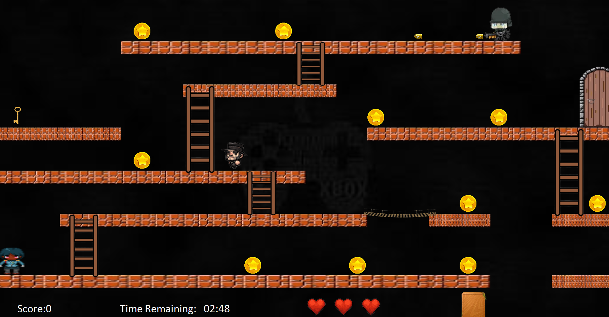
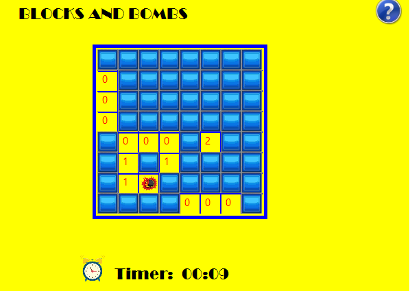
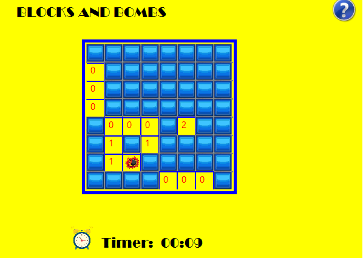

Projects Description
In this project, I developed 2D games using C# that draw inspiration from the classic games. The games incorporate key Object-Oriented Programming (OOP) principles, which facilitated the design and management of game components such as characters, obstacles, and game mechanics. The games incorporates features such as timers, obstacles, and a lives system, offering an engaging challenge for players.
- Graphical Interface: Developed with a focus on intuitive graphical interaction, making it visually appealing.
- Game Mechanics: Includes a countdown timer, dynamic obstacles, and multiple lives for players, adding complexity and excitement to the game.
- Modular Codebase: Leveraging OOP principles, enabling efficient management of game objects and interactions.
This project highlights key programming skills in game development, demonstrating a solid grasp of C#, OOP, and graphical interfaces. It emphasizes problem-solving and creativity in designing interactive and dynamic environments. As a portfolio item, it showcases technical proficiency, coding efficiency, and the ability to implement real-world gaming mechanics.
Project Images
 Lode Runner Project Chicken in Space Invader Project

Blocks and Bombs Project
Chicken in Space Invader Project

Blocks and Bombs Project